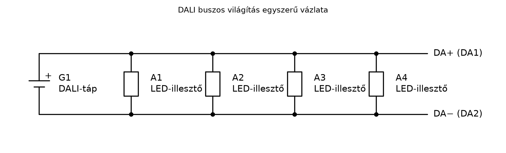
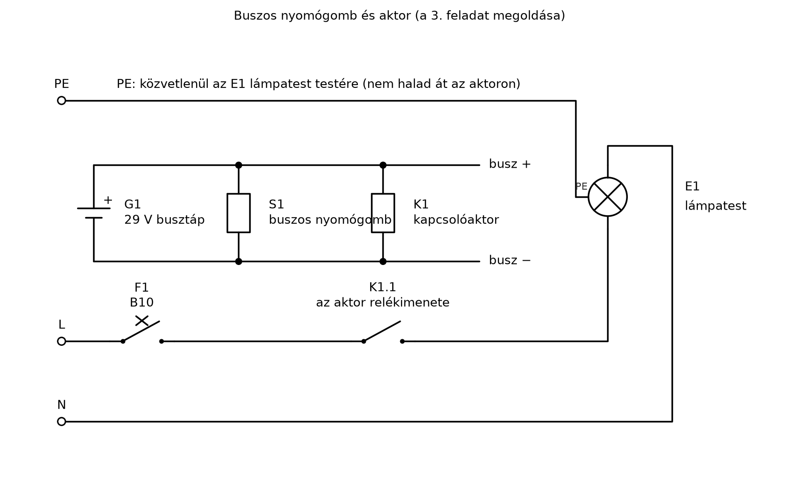

![KNX buszos kapcsolás egyszerű vázlata: buszrész és 230 V-os lámpakör - Szemléltető vázlat: a G1 busztáp, az S1 buszos nyomógomb és a K1 kapcsolóaktor párhuzamosan csatlakozik a két buszérre (+ és −); a buszérek között nincs közvetlen összeköttetés. A nyomógomb nem zárja rövidre a buszt, hanem táviratot küld; a K1 aktor relékimenete (K1.1) a külön, 230 V-os körben az F1 kismegszakító után a fázist kapcsolja az E1 lámpatestre, amely az N-re zárul, teste a PE-re csatlakozik. A rajz nem helyettesíti a gyártói bekötési útmutatót.](assets/ve072-diagram-1.png)
Hagyományos épületvillamosságnál a kapcsoló a lámpát közvetlenül, saját erekkel vezérli. Ha egy lakásban öt kapcsoló és öt lámpa van, akkor öt különálló áramkör fut a kapcsolókhoz és a lámpákhoz. Ha később egy új mozgásérzékelőt szeretnénk beépíteni, vagy egy kapcsolóról másik lámpát is működtetnénk, gyakran falat kell vésni, új vezetéket húzni és új kötődobozt szerelni.
A busz-alapú épületautomatika ezt a logikát megfordítja. A kapcsoló és a lámpa már nem közvetlenül egymáshoz tartozik, hanem egy közös táp- és adatbuszhoz. A kapcsoló megnyomásakor távirat (telegram) megy a buszra, a lámpát vezérlő aktor pedig megkapja a táviratot, és bekapcsol. Ez hasonlít a számítógépes hálózatokhoz, ezért a Számítógépes hálózatok és adatkommunikáció alfejezetben tanult elvek itt is felhasználhatók.
Figyelem. A buszrendszer kényelmes, rugalmas és bővíthető, de bevezetése nem jelenti azt, hogy a hagyományos, szabványos érintésvédelmi és túláramvédelmi ismereteket el lehet hagyni. A 230/400 V-os áramköröket ugyanúgy meg kell méretezni, védeni, mérni és dokumentálni, mint egy hagyományos rendszernél. A buszos eszközök táplálását is az érintésvédelmi és tűzvédelmi szabályok szerint kell kialakítani.
Az alábbi kapcsolási vázlat a buszos rendszer egyszerű szerkezetét mutatja: a busztáp és a buszeszközök párhuzamosan csatlakoznak a busz két erére (+ és −), a lámpát pedig egy külön, 230 V-os áramkör táplálja.
A vázlatban S1 egy buszos nyomógomb, amely érintéskor a buszra ír egy „én S1 vagyok, megnyomtak” táviratot. A K1 aktor figyeli a buszt, felismeri, hogy ez a távirat neki szól, és behúzza a reléjét. A relé érintkezője a 230 V-os lámpakört kapcsolja. A 230 V-os lámpakört hagyományos módon a kismegszakító védi, és az aktor relékimenete kapcsolja; a lámpa és a védővezető bekötése az épületvillamossági szabályok szerint történik.
Rajz–valóság–mérés hármas. A circuit
rajzon a busz külön van vezetve a 230 V-os áramkörtől. A valós
szerelésnél ezt a távolságot és a bekötést is ellenőrizni kell: a
buszkábelt tilos a 230 V-os erekkel azonos kötődobozban, azonos
védőcsőben vagy azonos kábeltálcán úgy vezetni, hogy az érintésvédelmi
és jel-átviteli szabályok sérüljenek. A mérés során a busz
tápfeszültségét és a távirat-átvitelt is ellenőrizni kell.
Definíció. A busz-alapú épületautomatika olyan rendszer, amelyben a résztvevők közös átviteli közegen (buszon) keresztül, címzett táviratokkal cserélnek adatot. A rendszerben a bemeneti eszközök (nyomógombok, érzékelők) adják a jeleket, a kimeneti eszközök (aktorok) hajtják végre a parancsokat.
A busz topológiája szabadabb, mint egy hagyományos vezérlés, de nem korlátlan. A KNX TP (twisted pair, csavart érpár) buszon fa-, csillag- vagy vegyes topológia alakítható ki; gyűrű nem engedélyezett. A hálózat méretét eszköz- és feszültségesés-korlátok határolják (ellenőrizendő: aktuális KNX-topológiai adatok a gyártótól vagy szabványos KNX-dokumentációból).
Címrendszer. Minden buszkészüléknek van egyedi fizikai címe, ami az eszközt a hálózaton azonosítja. A címzés hasonló a hálózati IP-címzéshez, de egyszerűbb: a fizikai cím három részből áll: terület.vonal.eszköz, pl. 1.1.15 = 1. terület, 1. vonal, 15. készülék. A csoportcím a funkciót jelöli, általában háromszintű formában: főcsoport/középcsoport/alcsoport, pl. 2/1/0 (ellenőrizendő: KNX Association dokumentáció).
Csoportcímek és távirattovábbítás. A csoportcím a funkciót azonosítja. Ha egy nyomógombot és egy aktort ugyanarra a csoportcímre helyezünk, akkor a nyomógomb által küldött táviratot az aktor végrehajtja. A csoportcímzés fontos előnye, hogy egy nyomógomb több csoportcímhez is tartozhat, így egyszerre kapcsolhat több fogyasztót, vagy indíthat egy világítási jelenetet.
ETS-projekt. Az ETS (Engineering Tool Software) a KNX-eszközök tervezésére, címzésére, programozására és diagnosztikájára szolgáló szoftver. A szerelő az ETS-ben létrehoz egy projektet, felveszi a készülékeket, beállítja a fizikai címeket és a csoportcímeket, majd letölti a konfigurációt az eszközökre. Az ETS a projektet dokumentumként is tárolja, ezért a későbbi módosítás és hibakeresés is könnyebb.
Szabvány. A KNX az épületautomatika nemzetközi szabványa, melyet európai szabványként is elismernek (EN 50090, ISO/IEC 14543 sorozat – ellenőrizendő: pontos hivatkozás). A szabványosítás célja, hogy a különböző gyártók KNX-eszközei együttműködjenek egy buszon.
Kiinduló helyzet. A villanyszerelő lakáselosztótól a szobákig húz vezetékeket. A buszos rendszerben a 230 V-os kábelek mellett egy buszkábelt is el kell helyezni. A KNX TP esetén jellemzően egy speciális, csavart érpárú, árnyékolt buszkábel szolgál a buszra (pl. YCYM 2x2x0,8, ellenőrizendő: aktuális jelölés). A két érpár közül az egyik (piros = +, fekete = −) a buszjel, a másik (sárga–fehér) tartalék. Az árnyékolást és a kísérőeret a KNX telepítési irányelvek szerint nem kötjük be és nem földeljük (ellenőrizendő: KNX Association / gyártói útmutató).
A busz tápfeszültsége névlegesen 29 V egyenáram, de a buszeszközök szélesebb tartományban működnek, és a táviratok váltakozó jelekkel ülnek ezen az egyenfeszültségen. A busztáp áramfelvételét és a vonal eszközeinek áramigényét össze kell vetni; egy vonalra csak meghatározott számú eszköz telepíthető (ellenőrizendő: topológiai és áramterhelési határok).
A buszkészülékek bekötése gyártónként eltérő, de a csavarozható vagy
rugós kapcsokon általában a buszpólusok (+, -
vagy piros/fekete jelölés) a készülék hátoldalán vagy külön csatlakozón
érhetők el. A bekötésnél ügyelni kell a pólushelyes bekötésre, mert a
rendszer érzékeny lehet a felcserélt vezetékre. A buszkábelt a 230 V-os
vezetékektől elkülönítve kell vezetni, hogy elkerüljük a zavaró
átbeszélést és a szigetelési hibák kockázatát.
Rajz–valóság–mérés. A busz mérésénél digitális multiméterrel ellenőrizhetjük a tápfeszültséget, de a távirat-átvitelt oszcilloszkóppal vagy buszdiagnosztikai eszközzel vizsgálhatjuk. A telepítés előtt a buszkábel folytonosságát és a busz tápellátását ellenőrizni kell.

Megjegyzés. Az ábrán minden buszeszköz a busz + és − ere közé, egymással párhuzamosan csatlakozik; a buszkábel eszközről eszközre felfűzve vagy elosztóból ágazva is vezethető (a KNX TP topológia a vonal-, fa- és csillagkialakítást is engedi), de az eszközöket soha nem kötjük sorba, és a két eret nem kötjük össze.
Helyzet. Egy irodában 40 lámpatestet szeretnénk fényerő-szabályozni, csoportokra osztani, esetleg jelenlét-érzékelőkhöz rendelni. Hagyományosan ehhez minden lámpatesthez külön fényerő-szabályzó és sok vezeték kellene. A DALI (Digital Addressable Lighting Interface) ezt a világítási vezérlést két buszérre, címzett táviratokkal oldja meg.
Definíció. A DALI egy világítástechnikai buszrendszer, amely digitálisan, címzetten vezérli a DALI-kompatibilis előtéteket, LED-illesztőket és fénycsöves előtéteket. A DALI busz jellemzője, hogy minden DALI-egység egyedi címmel rendelkezik (legfeljebb 64 rövid címmel, short address; ellenőrizendő: aktuális szabvány). A DALI a fényerő-szabályozást, a csoportosítást, a jelenlétfüggő vezérlést és az állapot-visszajelzést is támogatja.
A DALI busz egy kétvezetékes, polaritásfüggetlen rendszer (a legtöbb kialakításban), amelyen a táp és az adat együtt halad. A hálózatot egy DALI-táp (gateway vagy tápmodul) látja el, amely a busz feszültségét biztosítja, és lehetővé teszi a táviratok küldését. A DALI-eszközök bekötése tipikusan párhuzamosan történik a buszra.
Címzés és csoportok. A DALI-eszközöket programozással kell címezni. Az egyszerű DALI-vezérlő (pl. DALI-táp) vagy egy épületautomatikai gateway címzi fel a lámpatesteket. A DALI-eszközök csoportjai és jelenetei használhatók arra, hogy az irodában egyetlen nyomógomb egyszerre több lámpát állítson egy meghatározott fényerőre. A DALI kétirányú kommunikációjának köszönhetően a rendszer kiolvashatja a lámpatest állapotát, hibáját és működési idejét is.
Szabvány. A DALI az IEC 62386 sorozatban szabványosított (pl. IEC 62386-101, -201, ellenőrizendő: aktuális részek). A szabványosítás célja a különböző gyártók eszközeinek együttműködése.
Rajz–valóság–mérés. A DALI busz bekötése egyszerűnek tűnik, de a DALI-vezérlőerek nem törpefeszültségűek (csak alapszigetelésűek): hálózati feszültségű vezetékként kell kezelni őket, ezért a gyártói útmutató szerint a 230 V-os erekkel közös kábelben is vezethetők (pl. 5 eres kábel: L, N, PE, DA+, DA−), de érintésvédelmi szempontból nem tekinthetők SELV-nek (ellenőrizendő: IEC 62386-101 és gyártói útmutató). A KNX TP busz ezzel szemben SELV: külön kábelben, a hálózati erektől a KNX-irányelv szerinti elválasztással vezetendő. A szerelő a DALI busz feszültségét (üres buszon vagy nyugalmi állapotban) multiméterrel vizsgálhatja, a táviratokat pedig DALI-címzővel vagy diagnosztikai eszközzel elemezheti.

Megjegyzés. Az ábrán a DALI-illesztők párhuzamosan csatlakoznak a buszra; a gyakorlatban a busz polaritás-függetlenségét és a távolság-/árnyékolási előírásokat a gyártói adatlap és a szabvány rögzíti.
KNX és hagyományos vezetékezés összehasonlítása. A hagyományos kapcsolásban a kapcsoló és a fogyasztó közötti logika a vezetékezésben van elrejtve. Minden új funkcióhoz új vezeték, új kapcsoló vagy új relé kell. A KNX-rendszerben a logika a konfigurációban – nem a falban – van. Ezért a KNX nagy előnye a rugalmasság: egy nyomógomb átprogramozható, a funkció megváltoztatható anélkül, hogy a falat megbontanánk.
Hátránya, hogy a buszos rendszer bonyolultabb tervezést és programozást igényel, a hibák pedig nem mindig szemmel láthatóak. A villanyszerelőnek ismernie kell a busz mérését, az ETS-projektet és a készülékek paraméterezését. A költségek is összetettebbek: a buszos készülékek drágábbak, de a szerelési idő és a későbbi módosítási igény gyakran kisebb.
DALI és KNX szerepe. A DALI a világítási eszközök digitális kommunikációját valósítja meg; a KNX az épületautomatika általános busza. Gyakori megoldás, hogy a KNX-rendszer egy DALI-gateway-n keresztül vezérli a DALI-buszra fűzött lámpatesteket. Ekkor a felhasználó a KNX oldali nyomógombbal kapcsol, a KNX a gateway-nek küld táviratot, a gateway pedig lefordítja azt DALI-parancsra. Ez a kombináció jól mutatja a buszrendszerek rétegződését.
Más buszrendszerek. Az épületautomatikában ismert még a Modbus, a BACnet, az M-Bus (fogyasztásmérés), az IP-alapú épületautomatika és a vezeték nélküli rendszerek. Ebben a könyvben ezeket csak megemlítjük, mert a vizsgán a KNX és a DALI a legfontosabb buszos rendszer.
Szabvány. Az épületautomatikai rendszerek kialakításánál a kisfeszültségű villamos berendezésekre vonatkozó MSZ HD 60364 sorozatot kell alkalmazni. A buszvezetékek is villamos berendezések, ezért az áramütés elleni védelmet (MSZ HD 60364-4-41), a vezetékek méretezését (MSZ HD 60364-5-52) és a felülvizsgálatot (MSZ HD 60364-6) ugyanúgy be kell tartani. Emellett a KNX- és DALI-szabványok előírják a busz topológiáját, a tápáramot, a kábelezést és az elektromágneses összeférhetőséget.
Biztonság és megbízhatóság. A buszrendszerek gyakran életbiztonsági funkciókat is hordozhatnak (pl. vészvilágítás figyelése). Ezért a tervezésnél meg kell különböztetni a normál üzemű buszos funkciókat és a szabványos védelmi funkciókat. A védővezető soha nem építhető a buszos táviratokra; a védővezetőt mindig folytonos, mechanikailag rögzített vezetőként kell kiépíteni. A hálózati feszültségű áramkörök védelmét nem szabad a buszos reléktől függővé tenni. A buszrendszerben a tápellátás kimaradása vagy a busz sérülése legfeljebb a komfortfunkciókat érintheti, a biztonsági funkciókat nem.
Bővíthetőség. A KNX és a DALI rendszerek jól bővíthetők, mert új eszközök csatlakoztathatók a buszra, és új csoportcímekkel vehetők fel. Ugyanakkor a bővítés is tervezést igényel: ellenőrizni kell a tápáramot, a busz hosszát, az eszközök számát és a dokumentációt. A bővítés után a rendszert újra kell mérni, és a jegyzőkönyvet aktualizálni kell.
Egy kisebb irodaházban a bérlő azt kéri, hogy a világítás jelenlétfüggő legyen, és a tárgyalóban jeleneteket lehessen kapcsolni. A villanyszerelő a lámpatestekhez DALI-illesztős LED-paneleket szerel. A lámpatestek 230 V-os táplálása a mennyezeti áramkörből jön, a DALI-busz pedig a lámpatestek DALI-kapcsaira kerül. A tárgyaló nyomógombja DALI-nyomógombillesztőhöz (bemeneti egységhez) csatlakozik, vagy DALI-s nyomógomb kerül a buszra.
Az üzembe helyezés során a szerelő laptoppal vagy DALI-kézi programozóval felcímzi a lámpatesteket, majd csoportokat hoz létre. A tárgyaló lámpái egy csoportba kerülnek, a nyomógomb egy jelenetet aktivál, amely 80%-os fényerőt állít be; a jelenlétérzékelő utánfutási ideje 15 perc. A rendszer kipróbálásakor a szerelő megfigyeli, hogy a távirat a nyomógombból az összes lámpatesthez eljut, és a lámpatestek visszajelzik az állapotot.
A tanulság: a buszos rendszer üzembe helyezése nem csupán összekötés, hanem programozás és ellenőrzés is. Aki kihagyja a címzést vagy rossz csoportcímet ad meg, az gyakran ugyanolyan hibát keres, mint egy laza sorkapocsnál.
Cél. A tanuló ismerje a buszos rendszer kábelezésének és programozásának alapvető lépéseit, és értse, hogy hol kell a 230 V-os és a buszköri munkát szétválasztani.
Eszközök és anyagok. KNX TP busztáp, buszos nyomógomb, KNX aktor, buszkábel, ETS-képes számítógép, KNX/USB-csatlakozó, multiméter. DALI egység esetén DALI-táp, DALI-címző, LED-illesztő.
Biztonsági korlát. A feladat tanműhelyi (törpefeszültségű) környezetre vagy jogosult oktató felügyeletére vonatkozik; hálózati feszültségen önállóan ne végezd. A 230/400 V-os készülékek bekötését csak jogosult személy végezheti, az öt biztonsági szabály betartása után.
Lépések.
+ és
- kapcsait a buszkábel megfelelő pólusaira a
gyakorlótáblán. Ellenőrizd a kapcsolatot multiméterrel, és ne keverd a
buszt a 230 V-os sorkapcsokkal.Ellenőrzési pontok. A busz feszültsége stabil; a nyomógomb megnyomására az aktor reléje kapcsol; az ETS diagnosztikában nincs kommunikációs hiba; a 230 V-os oldali feszültségmentesítés és a védővezető bekötése megtörtént.
Tipikus hibák.
Hiba 1: „A buszrendszer nem igényel vezetékméretezést.” Ez téves. A 230 V-os fogyasztói áramköröket a buszos aktorok mögötti oldalán is a megszokott szabályok szerint kell méretezni, túláramvédelemmel ellátni és hurokimpedanciát mérni. A buszos rendszer csak a vezérlőjelet digitalizálja, a teljesítményt nem.
Hiba 2: „A DALI busz polaritásfüggetlen, tehát a pólusokat sosem kell ellenőrizni.” Bár a DALI-busz sok eszköznél polaritásfüggetlen, nem mindenütt. A bekötés előtt mindig ellenőrizni kell a gyártói adatlapot. A polaritás felcserélése adott eszköznél hibás működést okozhat.
Hiba 3: „A busz táviratai nem érnek el a nagy távolságra, ezért a táp feszültségét növelem.” A busztáp feszültségét nem szabad önkényesen növelni. A hosszabb vonalak tervezésénél a topológiai korlátokat, a busz hosszát és a tápáramot kell betartani. A helyes megoldás a szabályos szegmens-/vonalbővítés.
Hiba 4: „A buszos eszközök nem igényelnek védővezetőt.” A busztápok és aktorok 230 V-os táplálása esetén a védővezető bekötése kötelező. A védővezetőt soha nem szabad a busz távirataival összekeverni.
1. feladat (A). Határozd meg a buszos rendszer fő előnyét a hagyományos vezérléssel szemben, és mondj egy példát, amikor ez az előny megjelenik.
2. feladat (A). Egy KNX-rendszerben a nyomógomb fizikai címe 1.1.5, az aktoré 1.1.20. A csoportcím 2/1/0. Magyarázd el, miért kell mindkét eszközt ugyanarra a csoportcímre helyezni, és mi történik, ha a csoportcím eltérő.
3. feladat (B). Rajzolj egy egyszerű buszkapcsolást,
amelyben egy buszos nyomógomb egy KNX-aktort vezérel, az aktor pedig egy
230 V-os lámpát kapcsol. A diagram blokkban a fenti
vázlatot használhatod; jelöld a csoportcímet, amely a nyomógombot az
aktor kimenetéhez rendeli. A nyomógombot – mint minden buszeszközt – a
busz + és - ere közé, párhuzamosan kösd; a két
ér között soha nem lehet közvetlen összeköttetés.
4. feladat (B). Egy irodai DALI-rendszerben 8 LED-illesztő csatlakozik a buszra. A DALI-táp üresjárási feszültsége 16 V, terhelés alatt a legtávolabbi illesztőnél 12 V. Az adatlap szerint a busz feszültségének 9,5–22,5 V között kell lennie, és a buszon a megengedett feszültségesés legfeljebb 2 V (ellenőrizendő: IEC 62386-101, gyártói adat). Megfelel-e a rendszer? Indokold a hosszabb kábel és a feszültségesés szerepét.
5. feladat (C). Egy KNX-bővítés során a meglévő vonalra további 10 eszközt szeretnek kötni. Milyen szempontokat kell ellenőrizni a bővítés előtt? Gondolj a tápáramra, a busz hosszára, a címzésre és a dokumentációra.
6. feladat (D). Egy buszos világítási rendszerben a nyomógomb benyomásakor a lámpa nem kapcsol. A multiméterrel a busztáp feszültsége 29 V, az aktor 230 V-os oldalán nincs feszültség. Milyen hibát gyanítasz? Írj le egy hibakeresési lépéssort, ahol a méréssel elkülöníted a buszhibát, a programozási hibát és a 230 V-os oldali hibát.
Önellenőrzés – válaszok
1. feladat (A). A buszos rendszer legfőbb előnye a rugalmasság. A hagyományos kapcsolásnál a funkció a vezetékezésből adódik, így módosításkor vezetéket kell bontani. A buszos rendszernél a funkciót szoftveresen lehet megváltoztatni. Például egy nyomógombhoz újabb csoportcímet rendelve ugyanaz a nyomógomb egy másik lámpát is vezérelhet anélkül, hogy a falat megbontanánk.
2. feladat (A). A fizikai cím az eszköz hálózati azonosítója, a csoportcím a funkciót jelöli. Ha a nyomógomb és az aktor ugyanazt a csoportcímet használja, akkor a nyomógomb táviratát az aktor megkapja és végrehajtja. Ha a csoportcímük eltér, akkor az aktor figyelmen kívül hagyja a nyomógomb táviratát, mert az nem neki szól.
3. feladat (B). A vázlat a fent bemutatott KNX/DALI kapcsolási rajz mintájára módosítható, ahol S1 a buszos nyomógomb, G1 a busztáp, K1 az aktor (mindhárom a busz + és − ere közé kötve), K1.1 az aktor relékimenete, E1 a lámpa, F1 a lámpakör kismegszakítója. A busz és a 230 V-os kör külön van vezetve; a 230 V-os kör L → F1 → K1.1 → E1 → N, a lámpatest teste a PE-re csatlakozik.

4. feladat (B). A feszültségesés . A 12 V a 9,5–22,5 V tartományon belül van, de a 4 V-os esés több a megengedett 2 V-nál, ezért a rendszer nem felel meg: nagyobb keresztmetszetű vezetékre vagy rövidebb vonalra van szükség, és az eszközök áramfelvételét is ellenőrizni kell (ellenőrizendő: IEC 62386-101, gyártói adat).
5. feladat (C). A bővítés előtt ellenőrizni kell: - a busztáp terhelhetőségét (a 10 új eszköz áramfelvételét hozzáadva), - a busz hosszát és az eszközök közötti feszültségesést, - a rendelkezésre álló fizikai címeket és csoportcímeket, - az ETS-projektben a készülékadatbázis elérhetőségét, - a kábelezés állapotát és az árnyékolást, - a dokumentáció frissítését.
6. feladat (D). Ha a busztáp feszültsége rendben van, de az aktor 230 V-os oldalán nincs feszültség, akkor a hiba lehet az aktor konfigurációjában (nem kapott csoportcímet, nincs letöltve a program), az aktor buszkapcsolatában (buszpólus laza, törött ér), vagy a 230 V-os oldal védelmében (kismegszakító kioldott, csatlakozó laza). A hibakeresési lépéssor: 1. Jogosult személy feszültség alatt, megfelelő (CAT III) műszerrel mérje meg az aktor 230 V-os bemenő kapcsán a feszültséget (F1 állapota). 2. Ha a bemeneten van feszültség, mérje meg a kimeneten is kapcsolás közben. Ha javítani kell, előbb feszültségmentesíts az öt biztonsági szabály szerint. 3. Ellenőrizd a busz feszültségét az aktor kapcsain. 4. Olvasd ki az ETS-ből a csoportcímeket és a letöltés állapotát. 5. Küldj kézzel táviratot a buszra, és figyeld az aktor LED-jét. 6. Ha az aktor reléje nem húz be, cseréld vagy programozd újra az aktort.
A busz-alapú épületautomatika a kapcsolási logikát a vezetékezésből a konfigurációba helyezi. A KNX TP rendszer csavart érpárú buszon, 29 V DC tápfeszültség mellett címzett táviratokat küld; a fizikai cím az eszközt, a csoportcím a funkciót azonosítja. Az ETS-projektben készül a címzés, a csoportcímzés és a letöltés. A DALI a világítási komponensek digitális vezérlésére szolgál, tipikusan kétvezetékes buszon; minden DALI-egység címzett, és a rendszer állapot-visszajelzést is ad. A buszos rendszerek előnye a rugalmasság és bővíthetőség, hátrányuk a programozási igény és az összetettebb hibakeresés. A 230 V-os áramköröket a buszos aktorok mögött is a hagyományos szabványok szerint kell méretezni, védeni és mérni. A védővezetőt és a tápellátást soha nem szabad a busz távirataival helyettesíteni. Az Intelligens épület: tervezés, üzembe helyezés, energiahatékonyság alfejezetben ezeket az elveket használjuk az intelligens épület komplex tervezéséhez.
A szöveg a KNX és DALI alapfogalmakat a szakterület általánosan ismert, stabil elvei alapján tárgyalja. A pontos szabványszámok, topológiai határok, buszfeszültség-értékek, eszközszám-korlátok és címzési szabályok gyártónként és kiadásonként változhatnak, ezért ezeket a KNX Association és a DALI Alliance aktuális dokumentációjából, valamint a gyártói adatlapokból kell ellenőrizni. A szabványhivatkozásoknál (EN 50090, ISO/IEC 14543, IEC 62386) a pontos részek és kiadások megállapításához az aktuális szabványkatalógust kell használni. A 230/400 V-os szerelési követelményeket az MSZ HD 60364 sorozat aktuális kiadásai és a hazai jogszabályok határozzák meg.